vis-3-variable-pipeline.pdf
บทเรียนนี้ทำสองอย่าง: (1) เติมเต็มช่องว่างที่ Lesson 1–2 เปิดค้างไว้ — "Insightful" คืออะไรกันแน่ในกรอบการออกแบบ และ (2) แนะนำ "pipeline" 3 ขั้นตอนที่ visualization ทุกชิ้นต้องผ่าน ตั้งแต่หาข้อมูลดิบจนถึงนำเสนอ — ซึ่งเป็นขั้นตอนที่ mini project ของวิชานี้ให้คะแนนโดยตรง (Process/pipeline 40%).
Jock Mackinlay (1986) นิยาม Design ว่าคือการเลือก visual encoding ที่ insightful & functional ที่สุด จากความเป็นไปได้ทั้งหมด (n data dimensions × k visual variables) โดย:
ตอนนี้กรอบคิด 3 lecture เชื่อมกันครบ: Effective→Functional→Effective, Convincing→Truthful, Insightful→Expressive.
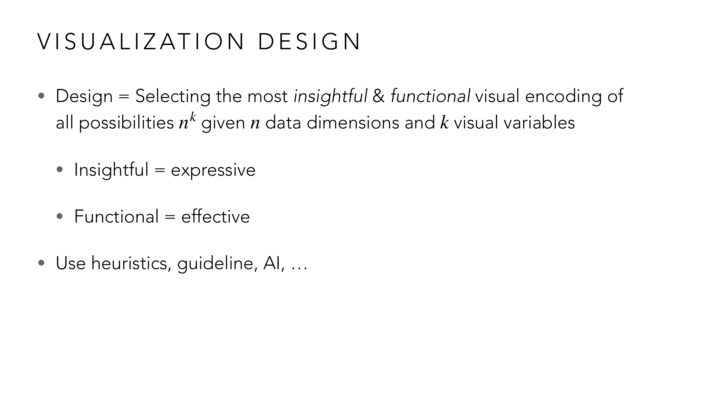
ลองคำนวณตามสูตร nk ดู: ถ้ามีข้อมูล n=3 มิติ (เช่น ยอดขาย, ภูมิภาค, เดือน) และมี k=5 visual variable ให้เลือก (ตำแหน่ง, ความยาว, มุม, สี, ขนาด) จำนวนวิธีเข้ารหัสที่เป็นไปได้ทั้งหมดคือ 35 = 243 แบบ! นี่คือเหตุผลที่ Mackinlay บอกว่าต้องมี "heuristics/guideline" ช่วยกรอง เพราะไล่ลองทีละแบบไม่ไหว — งานของนักออกแบบคือเลือก 1 ใน 243 แบบนั้นที่ทั้ง expressive (ไม่มโนความสัมพันธ์ที่ไม่มีจริง เช่น ไม่เอาข้อมูล nominal ไปเรียงเป็นเส้นแนวโน้ม) และ effective (ใช้ channel ที่คนอ่านค่าได้แม่นตรงกับสิ่งที่อยากสื่อ เช่น ใช้ position แทน area เมื่อต้องเทียบค่าแม่น ๆ).
Slide ขยายขอบเขต visual variable ให้กว้างกว่ารูปทรงนิ่ง ๆ: density (ความหนาแน่นจุดในแผนที่ choropleth), speed (ความเร็วใน animation), และตั้งคำถามยั่วคิดว่า "เสียง (sound) เป็น visual variable ได้หรือไม่?" (data sonification — เข้ารหัสข้อมูลเป็นเสียงแทนภาพ).
ตัวอย่างที่แสดงว่า visual variable สร้างขึ้นเองแบบสร้างสรรค์ได้ ไม่ต้องอิงกับ mark มาตรฐาน (แท่ง จุด เส้น) เลย:
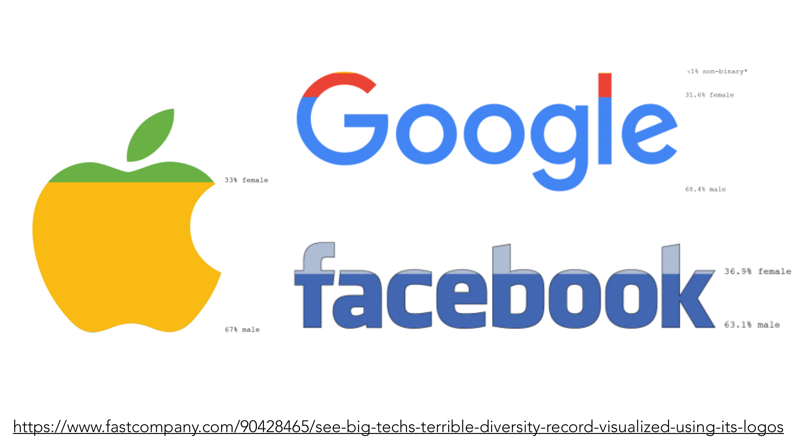
แทนที่จะวาด bar chart ธรรมดาเทียบสัดส่วนพนักงานชาย-หญิงของแต่ละบริษัท ภาพนี้เอาโลโก้ของบริษัทเองมาทำหน้าที่เป็น mark แล้วใช้ "ความสูงที่ถูกเติมสี" เป็น visual variable แทน — โลโก้ Apple ถูกระบายสีเหลืองจากฐานขึ้นไปจนถึงเส้นแบ่งที่ 67% (สัดส่วนพนักงานชาย) ส่วนที่เหลือ (ใบไม้สีเขียวด้านบน) แทน 33% หญิง โลโก้ Google และ Facebook ก็ใช้หลักการเดียวกัน แบ่งตามสัดส่วนจริง (Google: 68.4% ชาย/31.6% หญิง/<1% non-binary, Facebook: 63.1% ชาย/36.9% หญิง) — ตัวอักษร "mark" ในที่นี้ไม่ใช่สี่เหลี่ยมหรือวงกลมมาตรฐานเลย แต่เป็นรูปทรงโลโก้ที่ทุกคนจำได้ทันที ในขณะที่ "variable" ยังคงเป็นหลักการเดิม (สัดส่วนความสูงที่ถูกเติม) — นี่คือตัวอย่างว่าความคิดสร้างสรรค์ในการเลือก mark ทำให้ข้อมูลที่น่าเบื่อ (สถิติ HR) กลายเป็นภาพที่น่าจดจำและสื่อความหมายเสียดสีได้ในตัว (บริษัทที่พูดเรื่อง diversity บ่อย แต่ตัวเลขจริงยังไม่ diverse).
Slide ยกตัวอย่างที่ถกเถียงกันจริงในวงการวิจัย: pie chart มี Mark = slice (ชิ้นส่วน) แต่ Variable ที่คนใช้ตัดสินขนาดจริง ๆ คืออะไร — มุม (angle), ความยาวส่วนโค้ง (arc length), หรือพื้นที่ (area)? งานวิจัยของ Robert Kosara และคณะ (2016–2022) ยังไม่ฟันธงคำตอบเดียว — ทำให้ pie chart เป็นชาร์ตที่ "ตีความ variable ยาก" กว่าที่คิด.
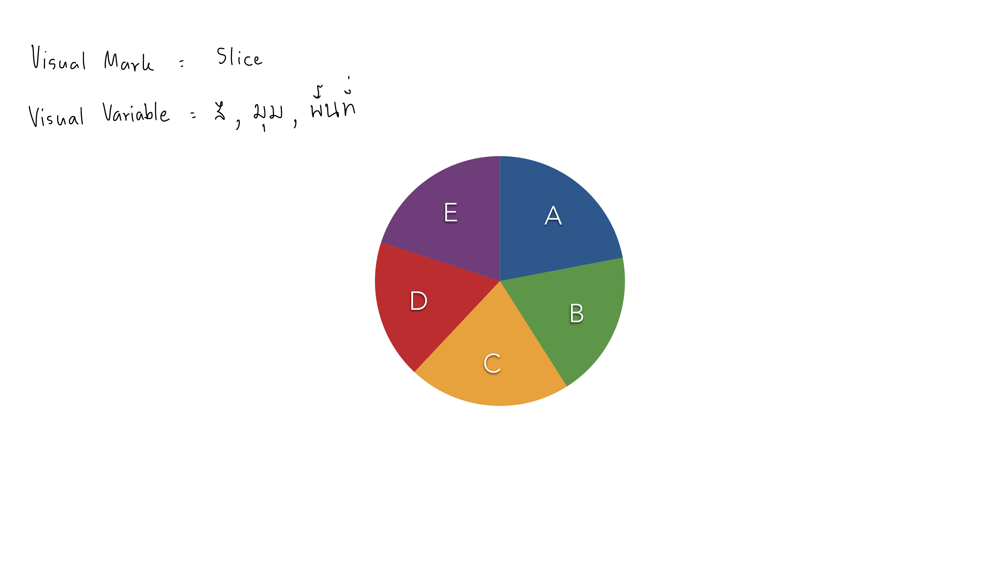
ลองเทียบกับ bar chart: ใน bar chart ทุกคนรู้ตรงกันว่า channel ที่เข้ารหัสค่าคือ "ความสูงของแท่ง" ไม่มีทางตีความเป็นอย่างอื่น แต่ pie chart 5 ชิ้น (A-E) ในสไลด์นี้ไม่มีความชัดเจนแบบนั้น — คนอ่านคนหนึ่งอาจกะขนาดชิ้น A จาก "มุมที่กาง" (angle) อีกคนอาจกะจาก "ความยาวส่วนโค้งด้านนอก" (arc length) และอีกคนอาจกะจาก "พื้นที่ทั้งชิ้น" (area) — ทั้ง 3 วิธีให้คำตอบไม่ตรงกันเป๊ะเมื่อขนาดชิ้นใกล้เคียงกัน นี่คือเหตุผลที่ pie chart เปรียบเทียบค่าแม่น ๆ ยากกว่า bar chart อยู่แล้ว (สอดคล้องกับอันดับความแม่นยำที่เรียนใน Lesson 2 ว่า angle/area แม่นน้อยกว่า position) และยิ่งซ้ำเติมด้วยความไม่แน่ชัดว่าคนอ่านใช้ channel ไหนตัดสินใจจริง.
ลองฝึกระบุ mark/variable กับชาร์ตข่าวจริงที่ซับซ้อนกว่า pie chart มาก — บทความ Harvard Business Review เรื่อง "การเมืองส่งผลต่อยี่ห้อเบียร์อย่างไร" (หลังกระแสแบน Bud Light ปี 2023):
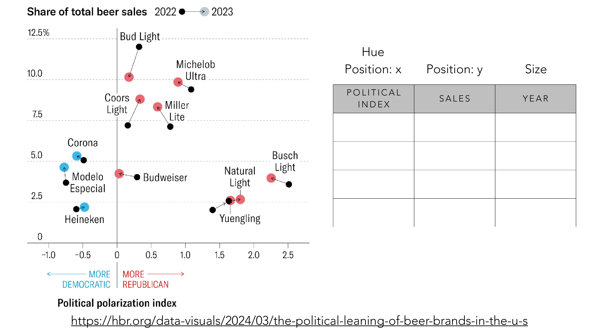
ชาร์ตนี้ใช้ 4 channel พร้อมกัน — ลองระบุทีละตัวตามตารางในสไลด์: Position: x = ดัชนีโพลาไรซ์ทางการเมือง (ยิ่งซ้ายยิ่ง Democratic ยิ่งขวายิ่ง Republican) Position: y = ส่วนแบ่งยอดขายเบียร์รวม Hue = หมวดหมู่ (ฟ้า = โน้มเอียง Democratic เช่น Corona, Heineken; ชมพู = โน้มเอียง Republican เช่น Bud Light, Busch Light) และมีลูกศรเล็ก ๆ เชื่อมจุดปี 2022 ไปปี 2023 แทนเวลา (เช่น Bud Light ขยับลงจาก ~12% เหลือ ~10% ส่วนแบ่งตลาด หลังกระแสแบนช่วงกลางปี 2023) — สังเกตว่าข้อมูลเดียวกันนี้ถ้าวาดเป็นตารางตัวเลขล้วนจะอ่านไม่ออกเลยว่าใครอยู่ฝั่งไหน แต่พอแยก 4 channel ให้ทำหน้าที่คนละมิติชัดเจน (ตำแหน่ง 2 แกน + สี + ทิศทางลูกศร) ก็เห็นเรื่องราวได้ทันที: ยี่ห้อที่โน้มเอียง Republican อย่าง Bud Light เสียส่วนแบ่งตลาดหลังกระแสคว่ำบาตร ในขณะที่ยี่ห้อโน้มเอียง Democratic อย่าง Modelo กลับเพิ่มขึ้น.
Slide ยกตัวอย่างชาร์ตยอดขายเดียวกัน ("Our Company's Sales Have Soared!") ที่ถูกปรับทีละขั้นจากหลอกลวงไปสู่ตรงไปตรงมา:
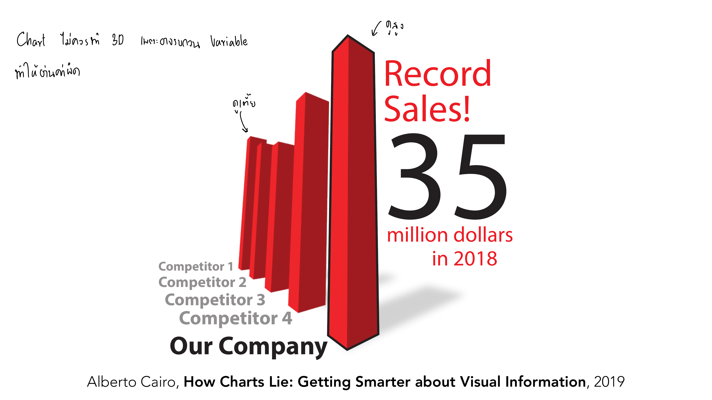
กลลวงของแท่งกราฟนี้คือมุมกล้อง: "Our Company" ถูกวางไว้แถวหน้าสุด (ใกล้ผู้ชมที่สุด) ส่วน Competitor 1-4 ถูกวางไว้ลึกเข้าไปด้านหลัง — ในมุมมอง 3 มิติ วัตถุที่อยู่ใกล้กล้องจะดู "ใหญ่กว่า" วัตถุที่อยู่ไกลออกไปโดยธรรมชาติ (perspective distortion) แม้ความสูงแท่งจริงจะเท่ากันเป๊ะ แท่ง "Our Company" ก็จะดูสูงเด่นกว่าคู่แข่งอยู่ดี บวกกับข้อความ "Record Sales!" ที่ดึงความสนใจไปที่ตัวเลข 35 ล้านดอลลาร์ (ตัวเลขเดี่ยว ไม่มีบริบทเทียบปีก่อน) — ผู้อ่านที่มองภาพนี้ 3 วินาทีจะรู้สึกว่า "บริษัทเราชนะขาด" ทั้งที่ยังไม่เห็นตัวเลขจริงของคู่แข่งเลยด้วยซ้ำ.
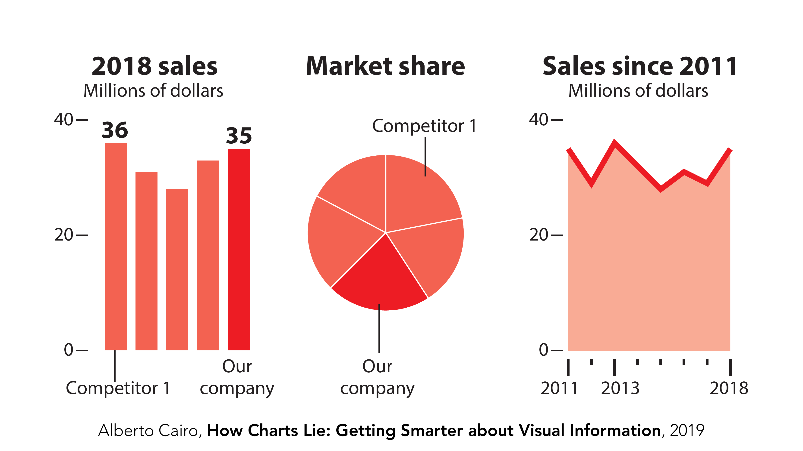
สังเกตว่าข้อมูลชุดเดียวกันเป๊ะ (ยอดขาย 35 ล้านดอลลาร์ของ "Our Company") ที่เคยถูกใช้สร้างความรู้สึก "ชนะขาด" ในเวอร์ชันแรก พอแยกออกมาเป็น 3 คำถามชัดเจน — "ปีนี้ขายได้เท่าไหร่" (แผงซ้าย), "ส่วนแบ่งตลาดเราเท่าไหร่" (แผงกลาง), "แนวโน้มหลายปีเป็นอย่างไร" (แผงขวา) — กลับเผยความจริงที่ต่างออกไปมาก เช่น อาจพบว่าถึงยอดขายจะสูง แต่ส่วนแบ่งตลาดยังตามหลังคู่แข่งอยู่ นี่คือบทเรียนสำคัญ: การ "รวมทุกอย่างในภาพเดียว" ไม่ได้แปลว่าให้ข้อมูลครบกว่า บางทีมันแค่ซ่อนความจริงที่ไม่อยากให้เห็นไว้เท่านั้น.
Slide เตือนตรง ๆ: เอาข้อมูล Ordinal ไปเข้ารหัสด้วย channel แบบ Nominal = ผิด และ เอาข้อมูล Nominal ไปเข้ารหัสด้วย channel แบบ Ordinal = ผิด เช่นเดียวกัน — ตัวอย่าง: แผนที่สีตามชื่อประเทศ (nominal) ถ้าใช้ไล่โทนสีเข้ม-อ่อน (ordinal channel) ผู้อ่านจะเข้าใจผิดว่ามีลำดับความสำคัญระหว่างประเทศ ทั้งที่ไม่มี.
| ขั้นตอน | รายละเอียด |
|---|---|
| Data Acquisition | Self-tracking, Scraping, Download & API (เช่น data.go.th, NSO Data Catalog) |
| Data Preparation | Cleaning, Transformation — "the hardest part is not to transform but to verify data" |
| Data Presentation | Visual Mapping, Storytelling |
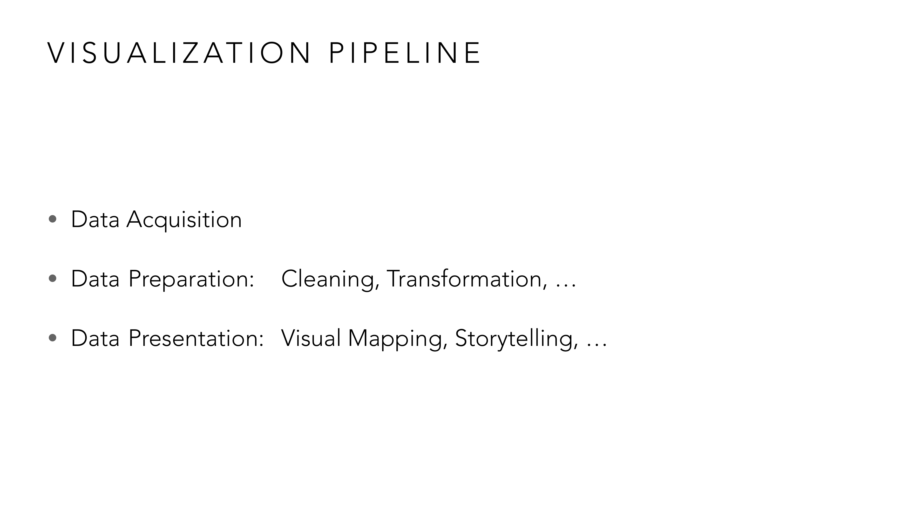
ลองไล่ตามกรณีจริง: อยากทำ visualization เปรียบเทียบงบประมาณแต่ละหน่วยงานรัฐ ขั้นแรก (Acquisition) ต้องไปโหลดข้อมูลจากแหล่งเปิดอย่าง data.go.th (ตัวอย่างที่สไลด์อ้างถึงจริง) — ได้ไฟล์ดิบมาแล้วยังใช้ไม่ได้ทันที ต้องผ่านขั้น Preparation ก่อน (ชื่อหน่วยงานสะกดต่างกัน หน่วยเงินไม่ตรงกัน มีแถวซ้ำ) ซึ่งมักกินเวลานานกว่าขั้นอื่นทั้งหมดรวมกัน สุดท้ายถึงจะมาถึงขั้น Presentation ที่เลือก chart type และลงมือวาด — สังเกตว่า 2 ใน 3 ขั้นตอนนี้ (Acquisition, Preparation) เกิดขึ้นก่อนจะได้แตะเครื่องมือวาดกราฟด้วยซ้ำ นักเรียนที่รีบกระโดดไปเลือก chart type ก่อนเช็คคุณภาพข้อมูล มักเจอปัญหาย้อนกลับมาแก้ทีหลัง.
ข้อมูลมักอยู่ในรูป wide table: แต่ละ row = 1 object/sample, แต่ละ column = 1 property/dimension — ต้องระบุก่อนว่าแต่ละ column เป็น nominal หรือ ordinal ก่อนเลือก visual variable (ตัวอย่างในสไลด์: ตารางเปรียบเทียบตุ๊กตุ๊ก/แท็กซี่/มอไซค์รับจ้าง — คอลัมน์ "แอร์" เป็น nominal, "จำนวนล้อ" เป็นเชิงปริมาณ).
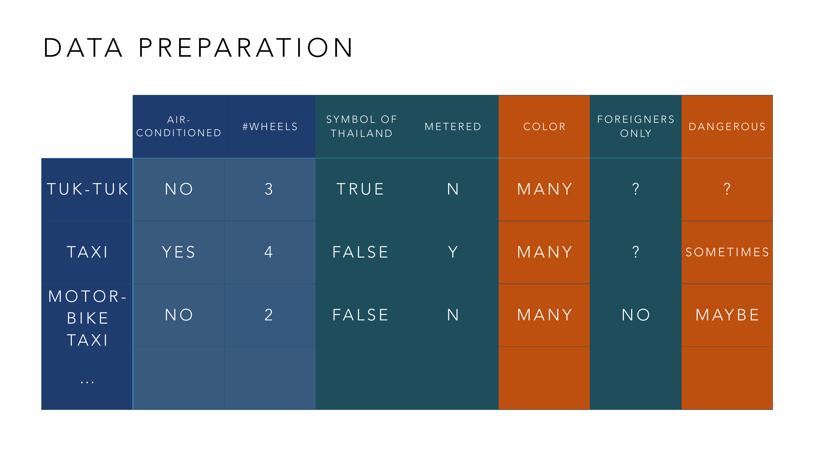
ลองเป็นคนออกแบบ visualization จากตารางนี้จริง ๆ: แถว TUK-TUK มีค่า AIR-CONDITIONED = NO, #WHEELS = 3, SYMBOL OF THAILAND = TRUE — คอลัมน์ "AIR-CONDITIONED" (มี/ไม่มี) เป็น nominal สองค่า เข้ารหัสด้วยไอคอนหรือสีคนละกลุ่มได้ แต่ห้ามใช้ไล่โทนเข้ม-อ่อน (เพราะ "มี" ไม่ได้ "มากกว่า" "ไม่มี") ส่วนคอลัมน์ "#WHEELS" (3 ล้อ, 4 ล้อ, 2 ล้อ) เป็นตัวเลขจริง เข้ารหัสด้วยความยาวแท่งหรือตำแหน่งบนแกนได้ตรง ๆ — ตารางเดียวกันนี้จึงต้องใช้ channel คนละแบบสำหรับแต่ละคอลัมน์ ไม่มีสูตรเดียวที่ใช้ได้ทั้งตาราง ต้องแยกพิจารณาทีละคอลัมน์.
นอกจากตัวสะกดไม่ตรงกัน (McDonald's/McDonald/McDonalds, กรุงเทพ/กรุงเทพฯ/กทม.) slide ชี้ปัญหาที่ลึกกว่า: ความสกปรกบางอย่างมาจากสมมติฐานที่ผิดตั้งแต่ต้น เช่น สมมติว่าชื่อคนมีช่องว่างระหว่างชื่อ-นามสกุลแค่ 1 ที่เสมอ (ผิดกับ "นายสมชาย ณ อยุธยา") หรือสมมติว่าชื่อไม่มีอักขระพิเศษ (ผิดกับ "นางสาวณิชา สมหวัง" ที่มีวรรณยุกต์/สระซ้อน).
สไลด์ยกตัวอย่างจริงระดับโลก 2 กรณีที่แสดงว่าสมมติฐานผิดเกี่ยวกับ Excel ก่อความเสียหายใหญ่แค่ไหน:
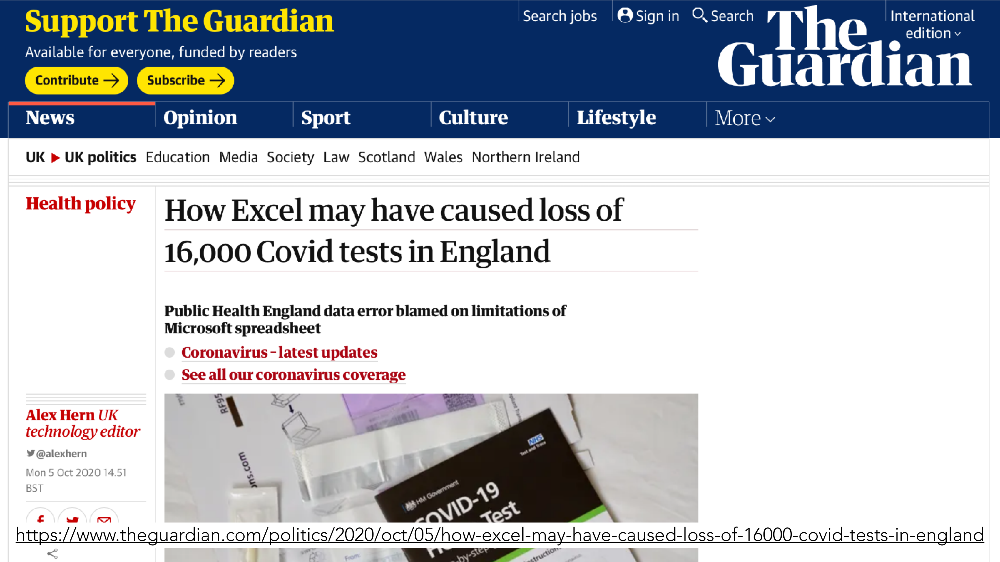
ปี 2020 หน่วยงาน Public Health England ใช้ไฟล์ Excel รูปแบบเก่า (.xls) ที่มีข้อจำกัดจำนวนแถวสูงสุดแค่ 65,536 แถว/คอลัมน์ในการรวมผลตรวจ COVID-19 จากทั่วประเทศ — เมื่อจำนวนเคสสะสมเกินขีดจำกัดนี้ ระบบไม่ได้ฟ้อง error ให้เห็นชัดเจน แต่กลับเงียบ ๆ ตัดข้อมูลส่วนเกินทิ้งไปเฉย ๆ ทำให้ผลตรวจเกือบ 16,000 รายการหายไปจากระบบรายงานราชการโดยไม่มีใครรู้ตัวอยู่หลายวัน ส่งผลต่อกระบวนการตามรอยผู้สัมผัสเสี่ยง (contact tracing) ทั้งประเทศ — นี่คือสมมติฐานผิดระดับโครงสร้าง: ทีมงานสมมติว่าจำนวนแถวจะไม่มีวันเกินขีดจำกัดของ format ไฟล์ที่เลือกใช้ ทั้งที่ในสถานการณ์โรคระบาดจริง ข้อมูลโตเร็วกว่าที่คาดไว้มาก.
ปัญหานี้ตลกร้ายกว่านั้นอีก: ชื่อยีนมนุษย์บางตัวสะกดแบบสั้น ๆ อย่าง "MARCH1" หรือ "SEPT1" — Excel เห็นรูปแบบตัวอักษร+ตัวเลขนี้แล้วตีความอัตโนมัติว่าเป็นวันที่ ("March 1" หรือ "1-Sep") แล้วแปลงค่าทิ้งโดยไม่ถาม ทำให้ข้อมูลชื่อยีนต้นฉบับหายไปเงียบ ๆ ในไฟล์วิจัยนับพันฉบับทั่วโลก — ปัญหาใหญ่ขนาดที่นักวิทยาศาสตร์ยอมแพ้ ไม่พยายามแก้ที่ Excel แต่กลับไปเปลี่ยนชื่อยีนอย่างเป็นทางการแทน (เช่น MARCH1 → MARCHF1) เพื่อไม่ให้ชนกับรูปแบบวันที่อีก — ประโยคใต้พาดหัวสรุปไว้กระชับมาก: "บางทีการเขียนพันธุศาสตร์ใหม่ยังง่ายกว่าการอัปเดต Excel" นี่คือตัวอย่างสุดโต่งของ "สมมติฐานผิด" ที่ Excel มีมาโดยไม่รู้ตัว (สมมติว่าทุกอย่างที่หน้าตาเหมือนวันที่ คือวันที่จริง) ส่งผลกระทบย้อนกลับไปถึงระดับมาตรฐานการตั้งชื่อทางวิทยาศาสตร์เลยทีเดียว.
Quartz Bad Data Guide แบ่งปัญหาข้อมูลตาม "ใครควรรับผิดชอบแก้": ต้นทาง (ค่าหาย, ข้อมูลซ้ำ) / ตัวคุณเอง (ข้อมูลอยู่ใน PDF, granular เกินไป) / โปรแกรมเมอร์ (จัดกลุ่มผิด, สแกนเอกสาร) / ผู้เชี่ยวชาญภายนอก (ผู้เขียนไม่น่าเชื่อถือ, ค่าผิดปกติอธิบายไม่ได้).
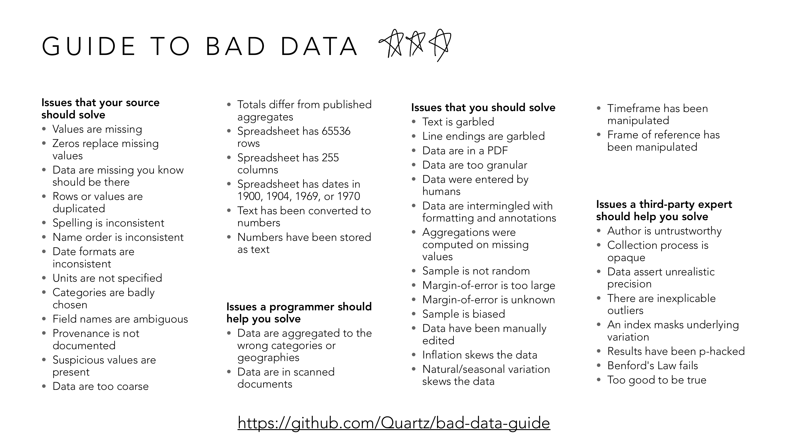
ลองใช้ตารางนี้วินิจฉัยปัญหาจริง 2 แบบ: เจอไฟล์ Excel ที่วันที่บางแถวเขียน "2/4/2023" บางแถวเขียน "2023-04-02" — นี่คือ "Date formats are inconsistent" ซึ่งอยู่ในคอลัมน์แรก แปลว่าต้องแก้ตั้งแต่ต้นทาง (ขอไฟล์ใหม่หรือคุยกับคนกรอกข้อมูล) ไม่ใช่เขียนโค้ดไล่แก้ทีหลัง เพราะรากปัญหาคือกระบวนการเก็บข้อมูลเอง เทียบกับอีกกรณี: เจอค่ายอดขายเดือนหนึ่งพุ่งสูงผิดปกติ 10 เท่าโดยไม่มีเหตุผลชัดเจน — นี่คือ "inexplicable outliers" อยู่ในคอลัมน์ขวาสุด ต้องให้ผู้เชี่ยวชาญนอกทีม (เช่นคนในธุรกิจนั้นจริง ๆ) ช่วยตัดสินว่าเป็นเหตุการณ์พิเศษ (เช่น โปรโมชั่นใหญ่) หรือเป็นข้อมูลผิดพลาด — 2 ปัญหาที่ "ดูคล้ายกัน" (ตัวเลขแปลก ๆ ในตาราง) จึงต้องส่งไปหาคนละคนแก้เลย.
ก่อนปิดท้าย pipeline สไลด์เชื่อมกลับไปที่ "Visualization Tools" (ที่ปกติหมายถึง Power BI, D3.js) ด้วยงานวิจัยของอาจารย์ผู้สอนเองที่ท้าทายว่า visualization ต้องอยู่บนหน้าจอเสมอไปหรือเปล่า:
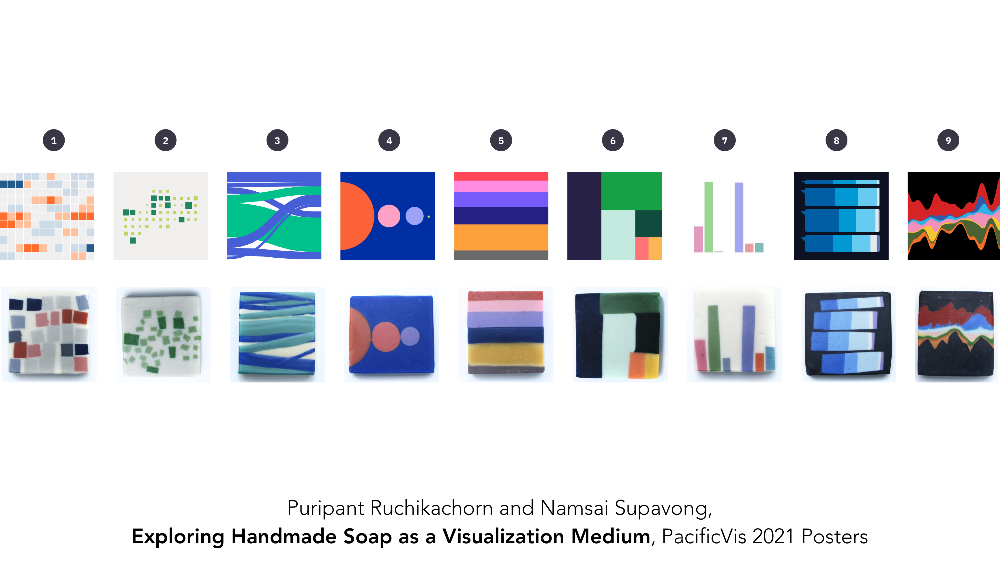
งานวิจัยนี้เอา chart แบบมาตรฐาน 9 ชนิดที่เรียนกันมาตลอด (heatmap, scatterplot, sankey/flow diagram, bubble chart, แถบสี, treemap, bar chart, ตาราง small multiples, streamgraph) มาทำเป็นสบู่ก้อนจริง — เช่น scatterplot (ชิ้นที่ 2) ทำเป็นก้อนสบู่สีขาวมีชิ้นสบู่สีเขียวเล็ก ๆ ฝังกระจายแทนจุดข้อมูล หรือ streamgraph (ชิ้นที่ 9) ทำเป็นชั้นสบู่สีสันไหลเป็นคลื่นซ้อนกันเหมือนกราฟจริงทุกประการ — แต่ละคู่ภาพแสดงให้เห็นว่าเทคนิคการเข้ารหัสข้อมูล (mark และ variable) ที่เรียนมาทั้งหมด ไม่ได้ผูกติดกับพิกเซลบนจอเลย สีของสบู่ = hue, ความหนาของชั้น = length/size, ตำแหน่งชิ้นสบู่ = position — ทุก visual variable แปลงเป็นวัสดุจริงที่จับต้อง ดม และสัมผัสได้ — นี่คือข้อคิดปิดท้ายบทเรียนที่สำคัญ: "Visualization" คือหลักการเข้ารหัสข้อมูลด้วยการรับรู้ทางสายตา (และสัมผัส) ไม่ใช่ "ซอฟต์แวร์ตัวใดตัวหนึ่ง" — งานวิจัยของอาจารย์ชิ้นนี้เองก็เป็นหลักฐานว่าคอร์สนี้สอนหลักการที่ประยุกต์ใช้ได้ไกลกว่าแค่การเขียนโค้ด D3.js.
ไล่ทุกหน้าของ vis-3-variable-pipeline.pdf — หน้าที่มี ✓ ถูกอธิบายและ/หรือใส่รูปในเนื้อหาข้างบนแล้ว ที่เหลือเป็นตัวอย่างประกอบ/ลิงก์อ้างอิง (etc).
| หน้า | เนื้อหา | สถานะ |
|---|---|---|
| 1–2 | ปก + ตารางเรียนทั้งเทอม | etc — บริบทวิชา |
| 3–5 | นิยาม Visual Variables (Channels) + Ordinal/Nominal เกริ่นนำ | etc — สอนละเอียดแล้วใน Lesson 2 |
| 6 | อันดับความแม่นยำการรับรู้ (Position/Angle/Area) — สไลด์เดิมซ้ำจาก Lesson 2 | etc — ซ้ำกับ Lesson 2 หัวข้อ 4 |
| 7–8 | Visual Variable = Density (แผนที่ choropleth) | ✓ หัวข้อ 2 |
| 9 | Visual Variable = Speed (animation) | ✓ หัวข้อ 2 |
| 10–13 | "เสียงเป็น visual variable ได้ไหม?" + ตัวอย่าง sonification/audio graphs | ✓ หัวข้อ 2 (กล่าวถึงแนวคิด sonification แล้ว) |
| 14 | นิยามทั่วไป Visual Mark vs Visual Variable | ✓ ส่วนหนึ่งของหัวข้อ 3 |
| 15 | Pie chart: Mark = Slice, Variable = มุม/สี/สัดส่วน | ✓ หัวข้อ 3 (มีรูป) |
| 16–17 | เกริ่นนำ bar chart mark/variable + ชาร์ตการเมือง-เบียร์ (HBR) เวอร์ชันยังไม่กรอกตาราง | ✓ ส่วนหนึ่งของหัวข้อ 3 |
| 18 | ชาร์ตการเมือง-ยี่ห้อเบียร์ HBR — ระบุ Hue/Position x/Position y/Size | ✓ หัวข้อ 3 (มีรูป) |
| 19–24 | ถกเถียงเรื่อง variable ที่แท้จริงของ pie chart (angle/arc/area) + อ้างอิงงานวิจัย Kosara และคณะ | ✓ หัวข้อ 3 (สรุปแนวคิดแล้ว) |
| 25–27 | ตัวอย่าง visual variable อื่น ๆ เกริ่นนำ | etc — เกริ่นนำก่อนภาพ p.28 (ลิงก์อ้างอิง) |
| 28 | โลโก้บริษัทเทคใหญ่แสดงสัดส่วนเพศพนักงาน (fastcompany.com) | ✓ หัวข้อ 2 (มีรูป) |
| 29 | เกริ่นนำตัวอย่างชาร์ตหลอกลวง (nominal variable) | etc — นำเข้าสู่หัวข้อ 4 |
| 30 | 3D bar chart หลอกลวง "Record Sales!" | ✓ หัวข้อ 4 (มีรูป) |
| 31–32 | เวอร์ชันกลาง: pie/donut share chart → 2D bar chart | ✓ หัวข้อ 4 (อธิบายในเนื้อหา) |
| 33 | เวอร์ชันสุดท้าย: small multiples ตรงไปตรงมา | ✓ หัวข้อ 4 (มีรูป) |
| 34 | (ว่าง) | etc |
| 35–40 | กับดัก Ordinal↔Nominal ผิด variable + ตัวอย่างแผนที่สี (เพื่อนบ้าน, COVID safety colors) | ✓ หัวข้อ 5 (อธิบายแนวคิดแล้ว ตัวอย่างแผนที่เป็นลิงก์อ้างอิง) |
| 41 | เกริ่นนำ Visualization Design | ✓ ส่วนหนึ่งของหัวข้อ 1 |
| 42 | Visualization Design: Insightful=Expressive, Functional=Effective (Mackinlay 1986) | ✓ หัวข้อ 1 (มีรูป) |
| 43 | เกริ่นนำ Visualization Pipeline (แผนภาพสามเหลี่ยม) | ✓ ส่วนหนึ่งของหัวข้อ 6 |
| 44 | Visualization Pipeline: Acquisition/Preparation/Presentation | ✓ หัวข้อ 6 (มีรูป) |
| 45 | Data Acquisition: self-tracking, scraping, download & API | ✓ หัวข้อ 6 |
| 46–55 | ตัวอย่างแหล่งข้อมูล (Instagram, blog, akc.org, cocktail db ฯลฯ) | etc — ตัวอย่างประกอบ (ลิงก์อ้างอิง) |
| 56–57 | Data Acquisition: Download & API — แหล่งข้อมูลเปิดจริง (Google Public Data, data.go.th) | ✓ หัวข้อ 6 (ยกตัวอย่างในเนื้อหาแล้ว) |
| 58–62 | แหล่งข้อมูลเปิดเพิ่มเติม (NYC Open Data, Wikipedia diff, Washington Post) | etc — ตัวอย่างประกอบ |
| 63 | Data Preparation: หาแหล่งข้อมูล/format ที่ใช้ได้ | ✓ ส่วนหนึ่งของหัวข้อ 6 |
| 64–66 | (ว่าง) | etc |
| 67 | Data Preparation: ตาราง Visual Variables ตัวอย่าง (PROP1-3) | etc — ตัวอย่างรูปแบบตารางทั่วไป ก่อนตัวอย่างจริง |
| 68–69 | ตารางตุ๊กตุ๊ก/แท็กซี่/มอไซค์รับจ้าง (ยังไม่ระบุ nominal/ordinal) | ✓ ส่วนหนึ่งของหัวข้อ 6 |
| 70 | ตารางตุ๊กตุ๊ก/แท็กซี่/มอไซค์รับจ้าง ฉบับเต็ม | ✓ หัวข้อ 6 (มีรูป) |
| 71 | Data Cleaning: ลบคอลัมน์ที่ไม่จำเป็น, แก้การสะกดไม่ตรงกัน | ✓ หัวข้อ 7 |
| 72–74 | ตัวอย่าง/อ้างอิง (Ben Jones, Avoiding Data Pitfalls) | etc — อ้างอิงประกอบ |
| 75 | Data Cleaning: ความสกปรกจากสมมติฐานผิด (ชื่อคนไทย) | ✓ หัวข้อ 7 |
| 76–81 | (ว่าง/ตัวอย่างข่าว เช่น Elon Musk DOGE data) | etc — ตัวอย่างประกอบ |
| 82 | Guide to Bad Data (Quartz) | ✓ หัวข้อ 8 (มีรูป) |
| 83 | ลิงก์ PDPC data anonymisation | etc |
| 84 | Data Tools: Excel, R/SPSS/SAS, OpenRefine, Great Expectations/Airflow/n8n | etc — รายชื่อเครื่องมือ ไม่ใช่ทฤษฎีที่ทำ quiz |
| 85–86 | Excel ทำให้ผลตรวจ COVID-19 หาย 16,000 รายการ (The Guardian) | ✓ หัวข้อ 7 (มีรูป) |
| 87 | นักวิทยาศาสตร์เปลี่ยนชื่อยีนหนีปัญหา Excel อ่านเป็นวันที่ (The Verge) | ✓ หัวข้อ 7 (มีรูป) |
| 88–92 | ตัวอย่างความเสียหายจากข้อมูลสกปรกเพิ่มเติม (ระบบแจ้งเตือนผิดพลาด, ราคายา) | etc — ตัวอย่างประกอบเสริมหัวข้อ 7-8 |
| 93 | Visualization Tools แบบ analog: Camera, Pen/Pencil/Stylus | etc — เกริ่นนำเครื่องมือ ไม่ใช่ทฤษฎีหลัก |
| 94–113 | ตัวอย่างงาน visualization แบบ analog/ศิลปะ (นำเข้าสู่งานวิจัย Handmade Soap) | etc — ตัวอย่างประกอบ แรงบันดาลใจก่อนถึง p.114 |
| 114 | Exploring Handmade Soap as a Visualization Medium (Puripant Ruchikachorn — อาจารย์ผู้สอน) | ✓ หัวข้อ 9 (มีรูป) |
| 115–116 | Visualization Tools แบบ digital: Power BI, Looker Studio, Datawrapper, RAWGraphs, Flourish, Vega, R ggplot2, Observable | etc — รายชื่อเครื่องมือ (มินิโปรเจกต์ใช้ D3.js/Altair เป็นหลัก ดู Lesson 4) |
สงสัยตรงไหน ถามได้เลยในแชท — ผมเป็นผู้สอนของคุณ ถามซ้ำได้ ถามลึกได้ ไม่ต้องเกรงใจ.